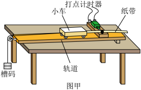

探究加速度与力、质量关系
控制变量

图甲：探究加速度与力、质量关系装置（打点计时器 + 小车 + 轨道 + 槽码）
实验原理
核心原理：牛顿第二定律 a = F/m。
控制变量法：① 质量 m 不变，改变拉力 F，得 a∝F；② 拉力 F 不变，改变质量 m，得 a∝1/m。
平衡摩擦力（常考点①）：调整轨道（长木板）的倾斜度，使小车刚好不受牵引（不挂砝码/托盘）时，能拖动纸带沿轨道做匀速运动（纸带上的点间距均匀），此时重力沿斜面的分力恰好平衡阻力。判断标准：轻推小车，纸带上打出的点间距大致相等。
图像：作 a–F 图（过原点直线）和 a–1/m 图（过原点直线）；若未平衡摩擦，a–F 图在 F 轴上有正截距；若平衡过度（垫太高），a–F 图在 a 轴上有正截距。
用光电门测瞬时速度（常考点②）：将两光电门安装在长直轨道上，选择宽度为 d 的遮光片固定在小车上，调整轨道倾角，用跨过定滑轮的细线将小车与托盘及砝码相连。小车通过光电门时：v ≈ d/Δt。
遮光片宽度选择：应选用较窄的遮光片（如 d = 1.00 cm，而不是 5.00 cm）。因为小车在做加速运动，遮光片越宽，Δt 内速度变化越大，d/Δt 就越偏离该点的瞬时速度（测得的是平均速度），误差越大。宽度越小越接近瞬时速度。
力传感器直接测拉力（常考点③）：把力传感器安装在小车上可直接测绳的拉力 T，能避免"槽码重力近似"带来的系统误差。设小车（含传感器）总质量 M、槽码质量 m，对槽码：mg−T=ma；对小车：T=Ma，联立得 T = Mmg/(M+m) = mg/(1+m/M)，故 T 总小于 mg，且 m 越大（越不满足 m≪M），T 与 mg 的差异越大。用"槽码重力 mg 当合力"与"传感器示数 T 当合力"对比时，槽码质量越大差异越大。如 M=210 g、m 取 5/10/20/40 g，m=40 g 时差异最大。
控制变量法：① 质量 m 不变，改变拉力 F，得 a∝F；② 拉力 F 不变，改变质量 m，得 a∝1/m。
平衡摩擦力（常考点①）：调整轨道（长木板）的倾斜度，使小车刚好不受牵引（不挂砝码/托盘）时，能拖动纸带沿轨道做匀速运动（纸带上的点间距均匀），此时重力沿斜面的分力恰好平衡阻力。判断标准：轻推小车，纸带上打出的点间距大致相等。
图像：作 a–F 图（过原点直线）和 a–1/m 图（过原点直线）；若未平衡摩擦，a–F 图在 F 轴上有正截距；若平衡过度（垫太高），a–F 图在 a 轴上有正截距。
用光电门测瞬时速度（常考点②）：将两光电门安装在长直轨道上，选择宽度为 d 的遮光片固定在小车上，调整轨道倾角，用跨过定滑轮的细线将小车与托盘及砝码相连。小车通过光电门时：v ≈ d/Δt。
遮光片宽度选择：应选用较窄的遮光片（如 d = 1.00 cm，而不是 5.00 cm）。因为小车在做加速运动，遮光片越宽，Δt 内速度变化越大，d/Δt 就越偏离该点的瞬时速度（测得的是平均速度），误差越大。宽度越小越接近瞬时速度。
力传感器直接测拉力（常考点③）：把力传感器安装在小车上可直接测绳的拉力 T，能避免"槽码重力近似"带来的系统误差。设小车（含传感器）总质量 M、槽码质量 m，对槽码：mg−T=ma；对小车：T=Ma，联立得 T = Mmg/(M+m) = mg/(1+m/M)，故 T 总小于 mg，且 m 越大（越不满足 m≪M），T 与 mg 的差异越大。用"槽码重力 mg 当合力"与"传感器示数 T 当合力"对比时，槽码质量越大差异越大。如 M=210 g、m 取 5/10/20/40 g，m=40 g 时差异最大。
闯关练习
高考真题
（2023·新课标）探究加速度与力、质量关系，平衡摩擦后，保持小车质量不变，增挂钩码改变拉力 F，测得多组 a、F。作出的 a–F 图像应为____；若作出的图像在 F 轴上有截距，说明____。
答案：过原点的倾斜直线；未完全平衡摩擦力（或摩擦力未被完全抵消）。